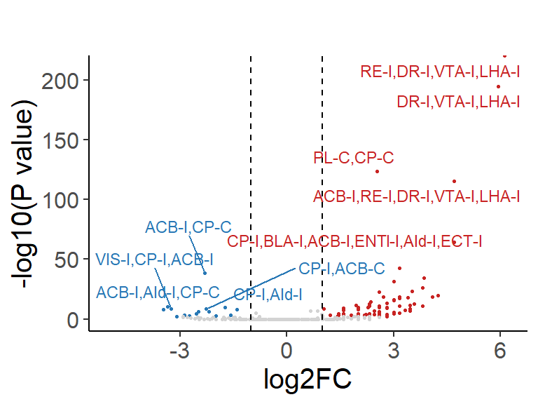
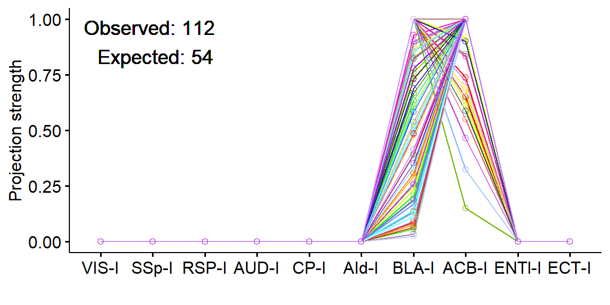
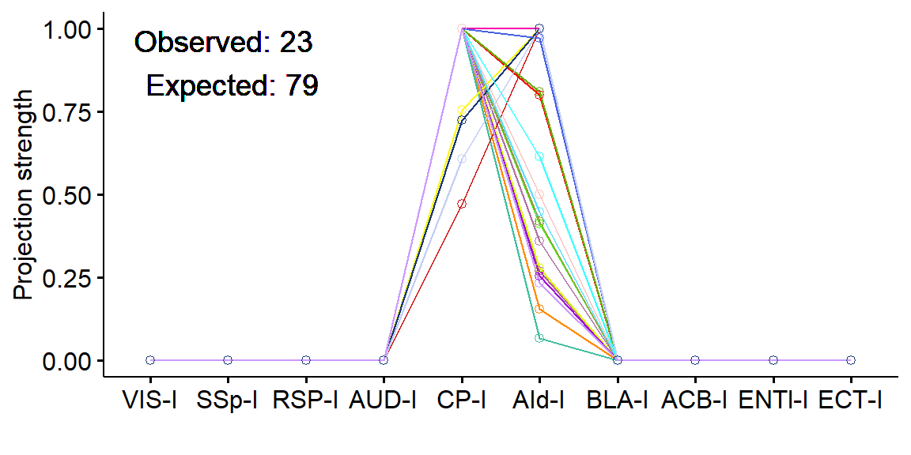
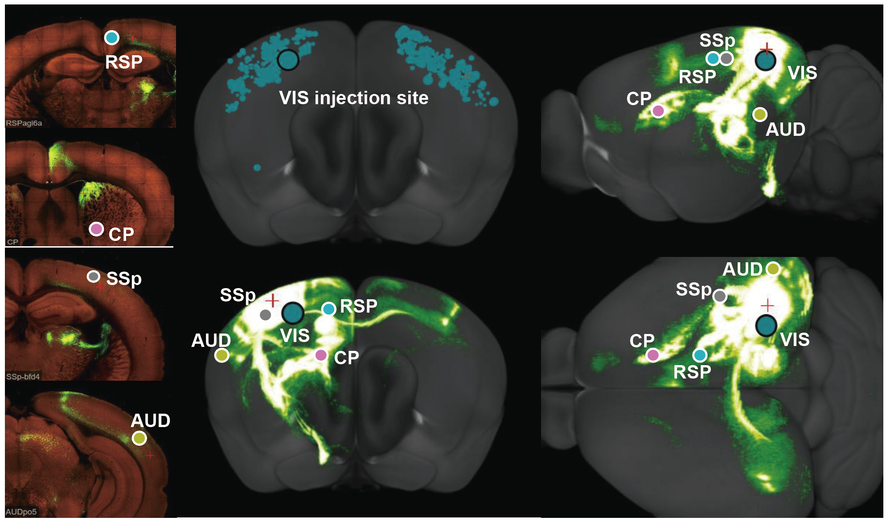
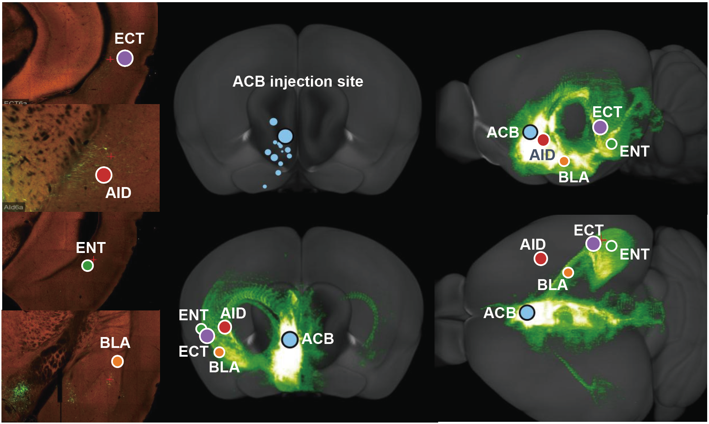

Code
library(Seurat)
library(tidyverse)
library(cowplot)
library(ggrepel)
library(ggpubr)
library(RColorBrewer)
library(ggsci)
library(Biorplot)
source('bin/Palettes.R')
source('bin/includes.R')library(Seurat)
library(tidyverse)
library(cowplot)
library(ggrepel)
library(ggpubr)
library(RColorBrewer)
library(ggsci)
library(Biorplot)
source('bin/Palettes.R')
source('bin/includes.R')Adult.Ex <- readRDS('../data/rds/Adult.Ex.rds')
sp.PFC <- readRDS('../data/rds/sp.PFC.rds')Adult.Ex.barcode <- subset(
Adult.Ex,
cells=colnames(Adult.Ex)[which(Adult.Ex$BC_num>0)]
)
Adult.IT.PT.barcode <- subset(Adult.Ex, cells=colnames(Adult.Ex)[which(
(Adult.Ex$BC_num>0 & Adult.Ex$Ex_subtype == "IT") |
(Adult.Ex$BC_num>0 & Adult.Ex$Ex_subtype == "PT" & Adult.Ex$sample == "Adult1")
)])Barcode_order <- c('VIS-I','SSp-I','CP-I','RSP-I',
'BLA-I','ACB-I','ENTl-I','AId-I','ECT-I',
'ACB-C','PL-C','ECT-C','ENTl-C',
'BLA-C','CP-C','AId-C','RSP-C',
'MD-I','RE-I','DR-I','VTA-I','LHA-I')
Barcode_order <- Barcode_order[-match(
c('MD-I','RSP-C','BLA-C','ECT-C','ENTl-C'),
Barcode_order)
]
Ex_BC_mat <- Adult.Ex.barcode@meta.data[, Barcode_order]
Ex_BC_mat <- Ex_BC_mat[rowSums(Ex_BC_mat, na.rm=T)>0,]
# Projection Motif Observed
Proj_motifs <- as.character(apply(Ex_BC_mat, 1, function(x){
paste(colnames(Ex_BC_mat)[which(x>0)], collapse=',')
}))
Proj_motifs_counts <- table(Proj_motifs)
Proj_motifs_counts <- Proj_motifs_counts[order(Proj_motifs_counts, decreasing = T)]
Proj_motifs_counts <- as.data.frame(Proj_motifs_counts)
colnames(Proj_motifs_counts) <- c('Motif', 'Observed')
Proj_motifs_counts$Motif <- as.character(Proj_motifs_counts$Motif)
# create Null Modle
Barcode_num <- apply(Ex_BC_mat, 2, function(x){
length(which(x>0))
})
fun <- function(N_total){
nrow(Ex_BC_mat)/N_total +
cumprod(1 - Barcode_num/N_total)[length(Barcode_num)] - 1
}
# N_total
root <- uniroot(fun, lower = nrow(Ex_BC_mat), upper = nrow(Ex_BC_mat)*10)
N_total <- round(root$root)
P_Ai_list <- Barcode_num/N_total
# P_expected
for (i in 1:nrow(Proj_motifs_counts)){
Motif_i <- strsplit(as.character(Proj_motifs_counts$Motif[i]),',')[[1]]
P_proj <- P_Ai_list[Motif_i]
P_notproj <- 1 - P_Ai_list[which(!names(P_Ai_list) %in% Motif_i)]
Proj_motifs_counts$P_expected[i] <-
cumprod(c(P_proj,P_notproj))[ncol(Ex_BC_mat)]
# Expected
Proj_motifs_counts$Expected[i] <-
round(Proj_motifs_counts$P_expected[i]*N_total)
# two.sided binom.test
Proj_motifs_counts$P_value[i] <-
binom.test(x=Proj_motifs_counts$Observed[i], n=N_total,
p=Proj_motifs_counts$P_expected[i],
alternative="two.sided")$p.value
}
# Bonferroni correction
Proj_motifs_counts$P_Bonferroni <- p.adjust(Proj_motifs_counts$P_value,
method="bonferroni")
# Fold Change
Proj_motifs_counts$log2FC <- log2(Proj_motifs_counts$Observed + 1) -
log2(Proj_motifs_counts$Expected + 1)
# Significance
Proj_motifs_counts$Significance <- 'not significant'
Proj_motifs_counts$Significance[which(Proj_motifs_counts$P_Bonferroni<0.01 &
Proj_motifs_counts$log2FC>1)] <- 'Up'
Proj_motifs_counts$Significance[which(Proj_motifs_counts$P_Bonferroni<0.01 &
Proj_motifs_counts$log2FC < -1)] <- 'Down'
#Proj_motifs_counts <- Proj_motifs_counts[which(Proj_motifs_counts$Observed >= 10),]
# Target_num
for (i in 1:nrow(Proj_motifs_counts)){
Proj_motifs_counts$Target_num[i] <-
length(strsplit(Proj_motifs_counts$Motif[i],',')[[1]])
}
Proj_motifs_counts <- Proj_motifs_counts[order(Proj_motifs_counts$Observed,decreasing = T),]DEGs <- Proj_motifs_counts[which(Proj_motifs_counts$Target_num>1),]
DEGs$label <- ""
DEGs <- DEGs[order(DEGs$P_Bonferroni, decreasing = F),]
top5_gene <- DEGs$Motif[which(DEGs$log2FC>1 & DEGs$P_Bonferroni<1e-2)]
if(length(top5_gene)>5){
top5_gene <- top5_gene[1:5]
}
down5_gene <- DEGs$Motif[which(DEGs$log2FC < -1 &
DEGs$P_Bonferroni < 1e-2)]
if(length(down5_gene)>5){
down5_gene <- down5_gene[1:5]
}
#top5_gene <- c(top5_gene,"Cnr1")
#down5_gene <- c(down5_gene,"Bdnf")
DEGs$label[match(top5_gene, DEGs$Motif)] <- top5_gene
DEGs$label[match(down5_gene, DEGs$Motif)] <- down5_gene
FigureS7_A <-
ggplot(DEGs, aes(x=log2FC, y= -log10(P_Bonferroni))) +
geom_point(aes(color=Significance), size=0.5) +
geom_vline(aes(xintercept=1), colour="black", linetype="dashed",
linewidth = 0.5) +
geom_vline(aes(xintercept = -1), colour="black", linetype="dashed",
linewidth = 0.5) +
geom_text_repel(aes(label=label, color=Significance), size=3, max.overlaps=Inf) +
theme_classic() +
theme(plot.title = element_text(size = 20, hjust = 0.5),
text = element_text(size = 15), legend.position = "none") +
scale_color_manual(values = c("Up"='#c82423', "Down"='#2878b5',
'not significant'='lightgray')) +
xlim(-5, 6.2) +
ylim(0,210) +
labs(title = "", x = 'log2FC', y = '-log10(P value)')
FigureS7_A
ggsave("../pdf/FigureS7/FigureS7_A.pdf", plot = FigureS7_A,
height = 3, width = 4, units = "in")seu <- Adult.IT.PT.barcode
Barcode_use <- c('VIS-I','SSp-I','RSP-I','AUD-I','CP-I',
'AId-I','BLA-I','ACB-I','ENTl-I','ECT-I')
ACB_BLA <- seu@meta.data[
which(seu$`ACB-I`>0 & seu$`BLA-I`>0 & seu$BC_num==2),
Barcode_use]
ACB_BLA[is.na(ACB_BLA)] <- 0
ACB_BLA$cellid <- rownames(ACB_BLA)
df_ACB_BLA <- pivot_longer(ACB_BLA, !cellid, names_to = "Target", values_to = "Value")
FigureS7_B_1 <-
ggline(df_ACB_BLA, "Target", "Value", color = "cellid", shape=21,
palette=colorRampPalette(pal_ucscgb("default")(20))(nrow(ACB_BLA))) +
geom_text(label="Observed: 112 \n Expected: 54", x=2, y=0.9, size=5) +
theme(legend.position = "none") +
labs(x="", y="Projection strength")
FigureS7_B_1
ggsave("../pdf/FigureS7/FigureS7_B_1.pdf", plot = FigureS7_B_1,
height = 3, width = 6, units = "in")seu <- Adult.IT.PT.barcode
Barcode_use <- c('VIS-I','SSp-I','RSP-I','AUD-I','CP-I',
'AId-I','BLA-I','ACB-I','ENTl-I','ECT-I')
CP_AId <- seu@meta.data[
which(seu$`CP-I`>0 & seu$`AId-I`>0 & seu$BC_num==2),
Barcode_use]
CP_AId[is.na(CP_AId)] <- 0
CP_AId$cellid <- rownames(CP_AId)
df_CP_AId <- pivot_longer(CP_AId, !cellid, names_to = "Target", values_to = "Value")
FigureS7_B_2 <-
ggline(df_CP_AId, "Target", "Value", color = "cellid", shape=21,
palette=colorRampPalette(pal_ucscgb("default")(20))(nrow(CP_AId))) +
geom_text(label="Observed: 23 \n Expected: 79", x=2, y=0.9, size=5) +
theme(legend.position = "none") +
labs(x="", y="Projection strength")
FigureS7_B_2
ggsave("../pdf/FigureS7/FigureS7_B_2.pdf", plot = FigureS7_B_2,
height = 3, width = 6, units = "in")knitr::include_graphics("images/FigureS7_C.png", dpi = 300)
knitr::include_graphics("images/FigureS7_D.png", dpi = 300)